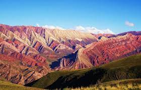

NO DEJES DE VIAJAR
En este día nos encontramos en una situación inesperada, pero igual estamos más unidos que nunca. Hoy te invitamos a viajar con nosotros desde tu casa para así recorrer juntos los sorprendentes escenarios de la Argentina.
Region de Cuyo
Está ubicada en el centro oeste de la República Argentina, abarcando
tradicionalmente las provincias de Mendoza, San Juan y de San Luis, y que
comparten una igualdad cultural y tradición histórica en común. Es usual la
inserción de la Provincia de La Rioja dentro de la región.
En esta región prevalece un relieve montañoso de escasa vegetación, con
particularidades climáticas desérticas. Como actividad económica predomina
la vinícola, siendo esta zona la principal productora de vinos de Sudamérica.
 Placeholder
Placeholder
Region Norte Argentino
Esta región de Argentina la integran seis provincias ubicadas en el
noroeste del territorio: Jujuy, Salta, La Rioja, Catamarca, Santiago del Estero y Tucumán.
Es ante todo, una geografía de notables contrastes, extraordinaria belleza paisajística
y riqueza cultural. La aridez de la Puna; la exuberante selva de las Yungas; planicies
santiagueñas casi a nivel del mar, y los más de 6.800 metros de la Cordillera de los Andes.
Allí donde la tierra muestra sus capas geológicas en Talpampaya, poniendo al descubierto
secreteos milenarios, y donde cada paisaje norteño enmarca antiguas ruinas, fortalezas del
período incaico, capillas coloniales, catedrales y basílicas.

Placeholder
Region Patagonia
La mítica Patagonia atesora escenarios naturales increíbles. Se ubica en el sur
del territorio argentino y la conforman las provincias de Neuquén, Río Negro, La Pampa,
Chubut, Santa Cruz y Tierra del Fuego, Antártida e Islas del Atlántico Sur.
Entre sus bellezas paisajísticas y grandes atractivos se destacan cinco sitios del
Patrimonio Mundial (UNESCO): el Parque Nacional Los Glaciares, La Cueva de las Manos, el
Parque Nacional Los Alerces y Península Valdés.
 Placeholder
Placeholder

.jpg)